Neutral · 1× authoritative

Fire · 1× authoritative

Owner review required. Read the native 256×240 frames first. Static faithful combat composition; no runtime integration or live QA claimed.
All panes native 256×240. The first two are unmodified source inspection renders; right pane is canonical proof composition.
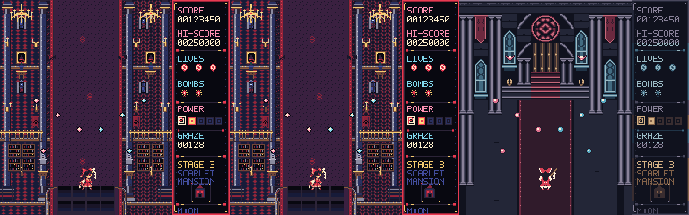
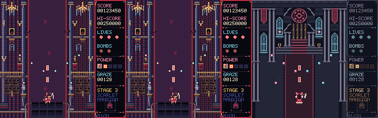
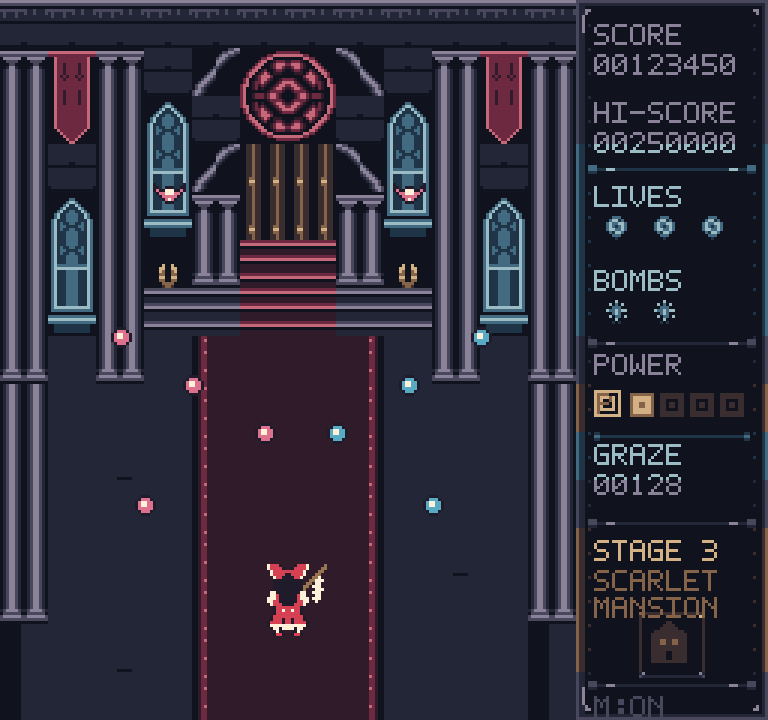
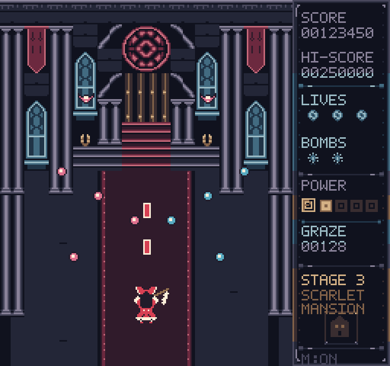
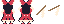
Both bodies 16×24; six SP0 cells. Props SP1. Body and prop anchors stay separate.
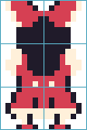
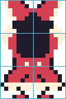
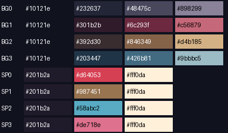
HUD shares background pools. All actors, bullets and effects share sprite pools. No swaps or extra palette exceptions.
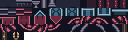
8×8 IDs are row-major. Exact maps: tile vocabulary.
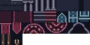
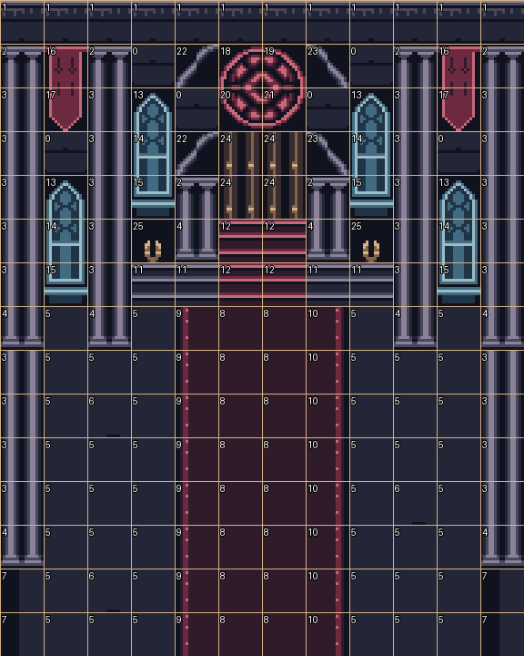
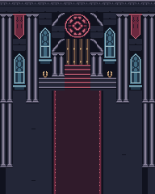
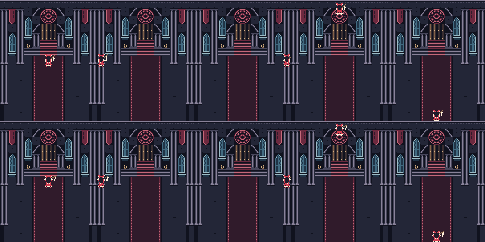
# #45 — Late-Cartridge artist checkpoint Status: canonical art and input checkpoint; local D4 packaging/publication and Owner acceptance pending. ## Authority and preserved references - Scarlet Moon #24 latest course correction → accepted #44 → activated #45 only. - Base/source commit: `e2891954abfb4505283898eea098fb9db4f822c4`. - Accepted profile candidate: `1c0ee0430f982c63563bfef56139424b53f601bd`. - #28 and merged reconnaissance remain state/canvas/runtime truth. Later profile requires rear-facing Reimu; the old source facing is not copied. - Read reconnaissance at `dev/reviews/v4_character_art_reconnaissance/Scarlet-Moon-Character-Review-2026-09-24.html`, original SHA-256 `7c66f576c6ef5ce12958dd3b99bfb98bc9b60ad34454f9f189775735af0b12bc`. - Approved Reimu design sheet: preserved PR #43 head `f04f635a496f23cb1815860c3e3e7271c0f64b49`, path `dev/reviews/v4_character_reference_packets/design-sheets/image-gen-1(20260927-092333).png`; Git blob `c1711a2d27d588448eae4b2047195beda2aa59da`; exact SHA-256 `2eb22de905cd9b4738f4b5540fd9f6c8167c828ecfb865becc05171ef9435f7a`. Inspected for design only. PR #43 stays held; no packet extension. - PR #22 at `c2241001946ac5456293f9f2b8be137e5c5bc648`: inspected centered Mansion gameplay. Retain rose/window, stone-pier, hanging, stair/carpet hierarchy; re-author tile/palette construction. Do not promote its palette or pixels as profile compliant. - PR #33 at `2a6afa4d411a4fa20b26688d4eee675539461a93`: exact deterministic composition/integration method evidence, not an integration branch to extend. - #40 remains workmanship guidance, subordinate to #44. The approved illustration supplies identity, never downsampled final pixels. No official PC Touhou rendering is a pixel-style target. ## Exactly two scenes `neutral` and `fire`, both 256×240: 192×240 Mansion, 64×240 existing sidebar. Ordered placements are fully enumerated in checkpoint.json. Shared background, HUD values, camera, actors and bullet positions isolate the Reimu state difference. Fire adds the current 5×10 shot envelope and alternate separate gohei. This is a faithful static inspection state, not a live capture, game-code integration, timing test or playthrough. Source comparison setup executes the unmodified V3/current V4 JavaScript with scheduling disabled, frame=16, stage=3, stageTick=1800, ordinary interior (no boss), player=(96,200), power=1, lives=3, bombs=2, score=123450, hi-score=250000, graze=128, sound on. Two ordinary Mansion familiars at (56,64)/(136,64); eight ordinary bullets at declared positions. Fire uses keys.z and two shots; neutral clears it. The software adapter implements integer rectangles/canvas copy/rectangular clipping used by this state. No claim of live browser QA. Standard package's `current_source` slot is deliberately V3; `reference_source` slot is current V4, so its physical panel order is V3 → current V4 → candidate. Both source images are already 256×240; no illustration is resampled. The standard review HTML labels/enlargement are unsuitable for #45 alone. `supplement.py --package ...` produces `lc45-review.html` with correct labels, native images FIRST, secondary 3× NN PNGs and construction evidence. Preserve standard verification; never silently overwrite it. ## Native construction `author.py` contains direct native 8×8 string atoms assembled into 16×16 units. The fixed 12×15 metatile map is in construction.json, with each placed unit's palette in authoring.json. 26 canonical 16×16 Mansion metatiles are used. Mirrored rose quadrants/arch pieces are integer reversals, not transformed illustration. `supplement.py` extracts/deduplicates their exact 8×8 vocabulary and emits atlas + tile IDs + metatile decomposition; it mechanically reconstructs every used metatile from those atoms. No background asset contains actors or bullets. Material language: stone has broad shafts, block masses and stepped moldings; glass has compact repeated lancet panes and a rose; fabric has dark flat mass, folded hangings and selective hem accents; wood/metal has warm recessed door rails and tiny unblurred sconces. Bright architecture is concentrated above y=128 and at the edges. Combat region x=48..143,y=128..239 stays low-detail; the carpet is dark, without noisy fill texture. Sparse stone joints break uniform floor repetition. This proof uses one resident Mansion bank; no phase variant or animated swap. ## Global live palette ledger Background backdrop in EVERY background subpalette: `#10121e`. | Pool | Local colors | Frame-wide jobs | |---|---|---| | BG0 | #232637, #48475c, #898299 | stone, floor, cornice, stairs, portions of HUD | | BG1 | #301b2b, #6c293f, #c56879 | carpet, hangings, rose, carpeted steps | | BG2 | #392d30, #846349, #d4b185 | door, sconces, HUD power/stage neighborhoods | | BG3 | #203447, #426b81, #9bbbc5 | glass, HUD life/bomb/graze neighborhoods | | SP0 | #201b2a, #d64053, #fff0da | BOTH Reimu bodies and player shots | | SP1 | #201b2a, #987451, #fff0da | BOTH gohei props | | SP2 | #201b2a, #58abc2, #fff0da | cyan ordinary bullets | | SP3 | #201b2a, #de718e, #fff0da | pink ordinary bullets AND bat familiars | Sprite pools add transparency. These are ONE set of four background and ONE set of four sprite subpalettes across the full ordinary frame. HUD's union storage palette is an indexed encoding of existing BG0–BG3, not a fifth live palette. Every 16×16 HUD neighborhood is checked against its explicit BG assignment. Each 8×8 sprite cell uses one listed SP. Reimu bodies use SP0 in all six cells; props SP1; bats and pink bullets share SP3. Four sprite subpalettes yield six distinct RGB colors because dark and ivory are shared; the allocation remains four slots. No mid-frame/raster/phase replacement, overlapping-subpalette trick, extra palette, alpha blend or silent exception is used. RGB choices are palette-role approximations under the accepted visual fiction, not a claim of literal analog NES signal/colorimetry compliance. ## Reimu construction/state proof Neutral and fire: exact 16×24; logical cell origins (0,0),(8,0),(0,8),(8,8),(0,16),(8,16). Each cell selects SP0. Top pair: broad red/ivory bow and solid dark rear hair; middle pair: detached ivory sleeve masses around long hair; bottom pair: red skirt, ivory stepped hem, compact feet. Same head rows and scale, same body anchor (8,12), same palette and cluster language. Fire lifts/spreads both sleeves and opens the lower skirt silhouette. Change is distributed over silhouette/pose, not recoloring. Construction data records exact changed-pixel count and each cell's colors. Normal gohei 10×14; fire gohei 12×14, separate transparent assets in SP1. Source offsets (8,-5)/(9,-4) relative to (96,200) give top-left (99,188)/(99,189). Body top-left (88,188); prop rendered behind body. Additional edge witnesses use current x=8/184,y=18/230 bounds and clip only to gameplay. They are inspection-only and do not alter movement or hitboxes. No idle B, focus family, story, portrait, title or other cast authoring. ## HUD preservation The exact source HUD at the stated values is rendered first, then recolored within each native 16×16 neighborhood. No glyph, border, icon, label, counter, layout coordinate, information item or behavior is newly designed. Luminance maps to the four selected background colors; adjacent original shades may merge as the minimum palette reduction. `supplement.py` verifies the canonical HUD pixel-for-pixel against this deterministic mapping of source HUD. Existing bitmap glyphs remain the source glyphs. Runtime UI code is unmodified. ## Canonical provenance and verification 35 selected canonical assets, all r2. Creation + grid-paste went through RoboPixel's authoritative engine. Every selected revision was independently read with asset_view and export_preview; exact text rows AND D3 render hashes match authoring inputs. Preview adapter round-trip cel checks pass. `checkpoint.json` pins every revision/palette/render hash; `export_hashes.json` pins exact UTF-8 matrix serialization. Export preview is not D9 approval/delivery. Local Work reconstruction uses these readback exports, independently recomputes D3 domain-separated RGBA hashes, and checks every scene pixel/placement. That is artist-side evidence only. The LOCAL handoff:package must still load canonical revisions through D4, verify all hashes, compose and emit verification.json. No local-package result or PNG hash from that encoder is fabricated here. `supplement.py --package ...` additionally compares the generated native PNG pixels against the checkpoint and checks source pins. Superseded unselected exploratory asset: `v4-lc45-bat` r2 (16×12), replaced by selected `v4-lc45-bat-familiar` r2 at the source's 11×7 extent. It remains preserved, is not part of either scene and must not be added to the package. ## Waivers and lint disposition No new waiver was requested, granted or recorded. Inherited profile waivers cover CPU/PPU timing, PRG/CHR exact capacity, mapper implementation, OAM/scanline ceilings, sprite flicker and VRAM bandwidth; this static proof does not certify those physical limits. Their visual lessons remain enforced. No palette waiver. All 35 selected revision validations pass. Nonblocking orphan warnings are retained transparently in validation_selected.json: deliberate trim stitches/stone corners, rose-quadrant boundary pixels, Reimu sash/feet, sconce tips, inherited HUD glyph/decorative marks. Shared-bank unused-color information is expected for quiet tiles and props. These are not erased with approval/waiver tools, and validation pass is not Owner art acceptance. ## Hard-fail review | Gate | Artist-phase result | |---|---| | Native authorship, no high-resolution reduction, no soft pixels or shader dependence | PASS; authored rows, opaque/transparent palette only | | Inspectable 8×8/16×16 construction | PASS; map, extracted vocabulary and exact reconstruction | | Global BG/SP pools including HUD/actors/effects | PASS; mechanical per-cell ledger checks | | Undocumented swaps/exceptions | NONE | | Canonical selected IDs/revisions/hashes | PASS; all 35 pinned and read back | | Neutral + meaningfully different active 16×24 Reimu | PASS artist inspection; exact shared cell/palette logic | | Separate prop, native envelopes and fixed runtime | PASS; no runtime files changed | | Official PC rendering used as style target | NO | | Native readability, material/cluster quality and cartridge identity | Artist inspected; OWNER JUDGMENT REQUIRED | | Deterministic source/export/composition correspondence | PASS artist-side; local D4 packaging verification PENDING | | Production Handoff v1 / no model-mediated binary publishing | Checkpoint ready; local package/publish PENDING | No claim of live QA, merge, publication, Owner acceptance or activation of broader V4 work. V4 LATE-CARTRIDGE PROOF — OWNER REVIEW REQUIRED
{
"phase": "local-D4-package-plus-supplement",
"selected_assets": 35,
"canonical_render_matches": 35,
"opaque_or_transparent_only": true,
"background_live_subpalettes": 4,
"sprite_live_subpalettes": 4,
"hud_private_palette": false,
"palette_swaps": [],
"palette_exceptions": [],
"mansion_metatiles": 26,
"mansion_unique_8x8_tiles": 67,
"mansion_metatile_cells": 180,
"reimu_changed_pixels": 70,
"hud_exact_declared_recolor": true,
"scenes": [
{
"name": "neutral",
"render_hash": "43f2634d14403f303e580d4a09bf752587c0453652689ae0e1e347d6ff1ca286",
"opaque": true
},
{
"name": "fire",
"render_hash": "fa9af5e2a0ba920afcbaa1b2b83c4a12f61184498871e5a7e0b0a9ac4db77221",
"opaque": true
}
],
"runtime_modified": false
}Supplement verification · Reimu map
V4 LATE-CARTRIDGE PROOF — OWNER REVIEW REQUIRED